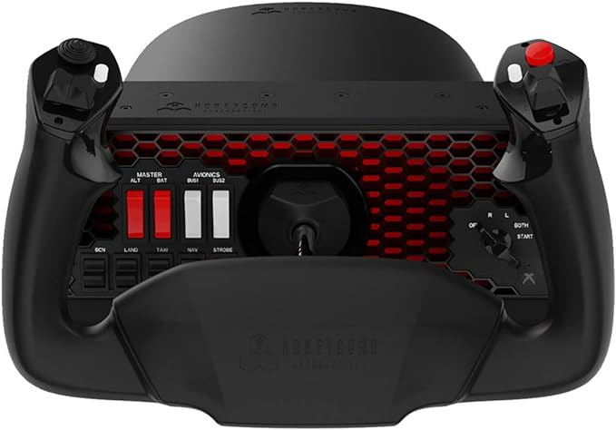
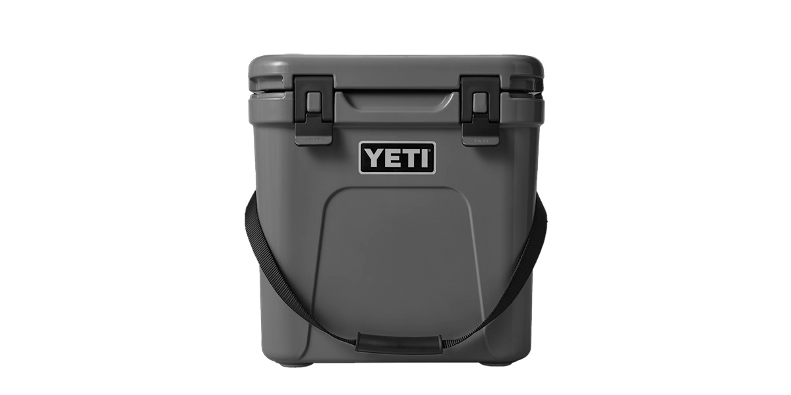
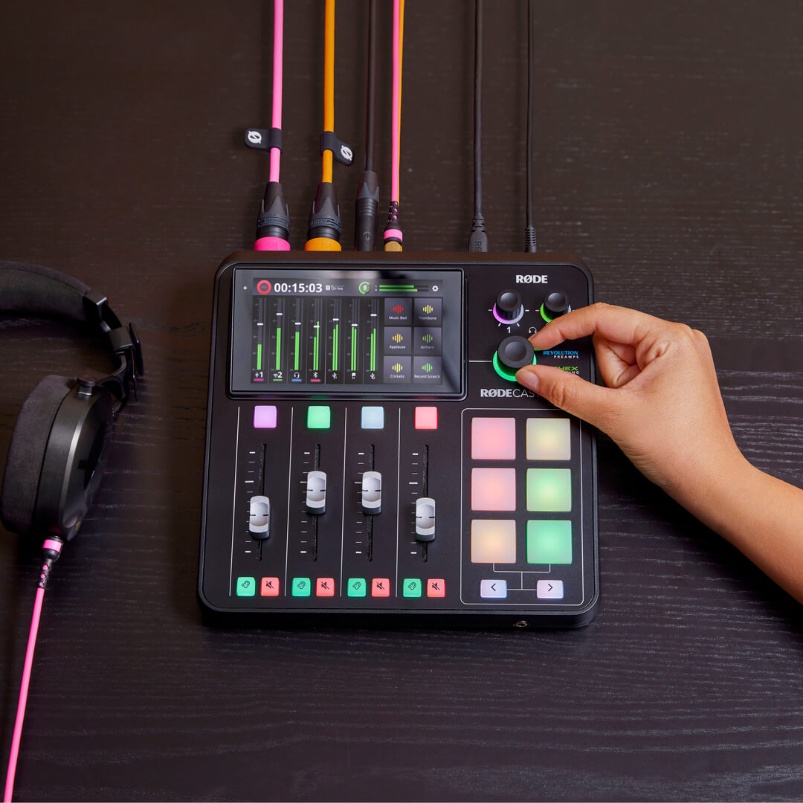

2023년도 지름 결산
여전히 매해 연말 지름보고 입니다.
일단, 작년 말에 구입했는데 추가하지 못했던 제품 먼저 리스트 합니다.
-
Honeycomb Alpha Yoke + Logitech throttle and rudder

개인 조종사 자격증을 공부하기 시작하면서 집에서도 실습을 하려고 장만한 조종기입니다. 스로틀과 러더는 저렴한 버전으로 샀지만, 요크만은 최대한 실제와 비슷하게 하려고 돈 좀 들여서 구입했네요. 저렴한 요크는 좌,우 45도만 도는데, 이 허니컴 요크는 좌 우 90도, 총 180도 돌 수 있어서 실제 세스나 조종과 1:1 대응이 됩니다.
직장을 바꾸게 되면서 조종사 자격증 공부는 잠시 쉬기로 해서 모두 헐값에 처분했네요.
-
Tusk Excursion Rackless bag + top mount
모토캠핑을 가기위해 장만한 바이크 가방입니다. 마운트가 필요없이 바로 바이크에 묶을 수 있는 Rackless 시스템인데, 달려고 봤더니 제 바이크(KTM 690 Enduro)의 번호판 지지대가 부러져있더군요. 교체하는 김에 Tusk top mount도 같이 구매해서 튼튼하게 연결했습니다.
가격이 무척 저렴해서 품질은 기대하지 않았는데, 튼튼하게 만들어졌습니다. MoskoMoto같이 디자인이 멋지거나 이런 저런 부가 기능 (pole pocket등)이 있는 것은 아닌데, 기본에 충실합니다.
690 Enduro 바이크를 처분하면서 같이 넘겨줬습니다.
-
MoskoMoto Woodman Enduro pants
기존에 사용하던 오프로드 바지는 허리에 맞추다보니 좀 길이가 짧아서 불편했었습니다. 그 이후 계속 MoskoMoto의 Woodman 바지를 눈여겨 보고 있었는데, 계속 매진이었죠.
그러다 이번에 재고가 들어와서 구입했는데 (가격 급상승...) 그 이후로 이전 바지는 입지도 않고 이것만 입고있습니다. 편하더라구요.
-
Yeti Rodie 24

기존 전기 냉장고를 아주 만족하면서 사용하고 있습니다. 그런데 냉장고가 트렁크에만 있다보니, 주행 중에 시원한 음료나 물 마실 때 좀 불편하더라구요. 뒷좌석 중간에 둘 수 있는 쿨러나 냉장고를 살펴봤는데, 전기 냉장고는 가격이 너무 사악해서 하나를 추가로 사지는 못하겠더라구요.
쿨러계의 애플로 불리는 Yeti 24리터 쿨러를 할인할 때 샀습니다. 보냉 성능이 아주 좋거나 그런건 아닌데, 저렴이보다는 좀 튼튼해 보이고 유지도 적당히 되더군요. 미리 냉장시켜둔 물 + 아이스 넣으면 사흘은 문제없이 유지합니다.
사실 그정도 성능도 필요한게 아니라 거의 하루 정도만 유지하면 되서, 아이스팩 넣고 다니고 있습니다.
전기 냉장고만큼 만족하는 제품입니다. 가까운 곳을 다닐 땐 Yeti만 뒷자리 가운데에 두고 다니고 있습니다.
-
Rode Wireless ME
제가 느끼기에 일할 때 영어가 부족한 것 같아서 평소에 출퇴근시에 영어로 녹음을 하고 듣곤 했습니다. 처음엔 Tentacle Sync Track E를 사용해서 녹음하다, Zoom F3를 사고 중복되는 듯 해서 Tentacle Sync Track E를 팔았죠. 안팔걸 그랬습니다.
그 후 Zoom F3로 녹음을 하는데, 이게 XLR 입력 전용이다보니 Lavalier 마이크를 써서 녹음하는 게 불편합니다. 무겁기도 하고, Phantom 48V를 Plug-in Power로 변환해 주는 것을 다니 거추장스럽습니다.
그래서 문명의 이기를 다시 한번 누려보고자, 최근에 출시된 Rode 무선 마이크 시스템을 저렴하게 구입했네요. 더 성능 좋은 Wireless GO II도 있지만, 송신기에 녹음되는 기능이 필요하진 않아서 ME를 샀습니다. GO II를 살걸 그랬습니다. 송신기 녹음이 꽤 편리하겠더군요.
Wireless ME를 이용해서 스마트폰에 바로 녹음하고 있습니다. 스마트폰에 녹음하다 보니 훌륭한 녹음 앱을 쓸수 있더군요. 녹음하면서 바로 transcribe (받아쓰기) 해 주는 앱을 여러개 사용해 보고 네이버 클로바노트로 정착했습니다.
일단, 녹음 품질은 좋은 마이크를 쓰는것에 비해서는 한참 부족하지만, 스마트폰 마이크나 차량 블루투스 마이크에 비하면 월등히 좋습니다. 게다가 ME의 AutoGain 기능을 쓰면 볼륨 걱정 거의 하지 않고 편하게 녹음할 수 있어서 좋더군요.
클로바노트로 녹음하니 발음이 좀 어색한 부분이라던지, 나중에 노트를 보면서 어느 부분이 문법에 맞지 않게 말했는 지 쉽게 찾아볼 수 있어서 좋았습니다. 아직 영어 요약 기능이 제공되진 않아서 그 점은 조금 아쉽더군요.
ME는 만족하면서 사용중입니다. 아이들 영상 녹화할 때에도 대충 마이크 근처에 꼽아두고 녹화하니 소리가 월등히 좋습니다. :)
-
Rodecaster Duo

Focusrite Vocaster Two를 처분하고 Rodecaster Duo를 구입했습니다. 기존에 Rode에서 나온 Rodecaster Pro II (RCP) 기반에 XLR 갯수를 두개로 줄인 제품입니다. 보통 사이즈를 줄이다보면 기능을 타협해서 내놓아서 고가의 제품을 구입하도록 유도하는 경우가 많은데, Rodecaster Duo는 RCP의 기능을 모두 가지고 있습니다. 회사의 개발 정책이 정말 마음에 드네요.
Vocaster가 기능이 부족했느냐? 라고 묻는 다면, 절대 아닙니다. Vocaster도 훌륭하고 가격도 제가 구입했을 때 보다 꽤 내려가서 여전히 훌륭한 제품입니다. Rodecaster Duo를 구입한 이유는, 녹음기능과 다양한 Voice processing 기능을 쓰기 위해서 입니다.
사용해보고 나니 noise gate 외에는 그다지 유용하진 않네요. Vocaster가 Camera out이 따로 있어서 더 편리한 점도 있을 것 같습니다.
이젠 더 업그레이드 할 만한 기기도 없는 거의 끝판왕 기기를 들였으니 당분간은 오디오 부분은 추가할 게 없을 것 같네요.
-
Unifi Enterprise 8 POE Switch + U6+ Access Point
회사에 짤리면서 집에서 사용하던 개발버전 메시 라우터 (Nest Wifi Pro)를 반납해야 해서 대체품을 물색하고 있었습니다. 메시 시스템을 다시 써볼까 했는데, 라우터에서 서재방까지 메시로 연결하는데 불편한 점이 있었습니다. 중간에 위성기기를 놓을 공간이 마땅치 않습니다. 복도에 전원 콘센트가 없다보니 이전에 메시 연결할 때에도 신호가 안정적이지 않았죠.
그래서 이번에 시스템을 바꿀 땐 무선 AP를 이더넷 케이블로 연결하고자 마음먹었습니다. 기존에 복도 바닥에 선을 끌어와서 바닥에 위성기기를 놔뒀었는데, 그러지 않고 천장으로 AP를 올려서 깔끔하게 만들고 싶었죠.
워낙에 귀차니즘이 큰 사람이라 사두고 설치를 안하게 될 것 같아, 일부러 좀 비싼 제품으로 샀습니다. 그러면 아까워서라도 몸이 움직일 것 같았거든요.
예상은 적중해서, 그 무더위를 이겨내고 Attic에 올라가서 이더넷 연결을 했습니다. 아직 AP만 두개 연결했지만, 이미 속도는 더할 나위없이 훌륭합니다.
Unifi의 Access Point 제품은 전원을 따로 연결할 필요가 없습니다. 이더넷 케이블에서 전원을 끌어오는 Power-over-Ethernet (PoE) 방식을 씁니다. 스위치가 전원을 공급할 수 있는 스위치여야 하지만, 대신에 이더넷 선 만으로 깔끔하게 연결되는 게 마음에 드네요.
이렇게 고가의 시스템으로 넘어가면서 또다른 장점이 하나 있습니다. VLAN을 만들 수 있어서, Guest 네트워크, IoT 장치 네트워크, 그리고 주 네트워크로 분리를 해서 서로 통신이 불가능하게 설정했습니다. IoT는 주 네트워크에서 접속할 일이 있기에 주 네트워크에서 접속은 허용하고 IoT에서 주 네트워크를 접속하는 것은 막아두었습니다.
이 모든 기능은 Unifi Switch와 아래에서 언급할 Firewalla 라우터로 설정할 수 있습니다.
아직 서재방이나 다른 방으로 이더넷을 직결하는 것은 진행하진 않았지만, 조만간 그 작업도 할 생각입니다.
결국 2023년이 끝나도록 방에는 이더넷 선을 연결하지 못했습니다. 이놈의 귀차니즘...
-
Firewalla Gold Plus
Unifi 스위치에서 설정할 수 있는 VLAN 기능을 제대로 쓰기 위해선 라우터에서 VLAN 사이의 트래픽을 컨트롤 해 줄 수 있어야 합니다. 그렇지 않으면 VLAN 사이에 통신은 원천 차단되죠.
이 VLAN을 지원하는 라우터를 몇가지 물색했고 집에서 쓸만한 제품을 몇개 추렸습니다. Unifi Dream Machine, pfSense (+ Netgate), OPNsense, Firewalla Gold 정도가 눈에 들어왔습니다. Unifi Dream Machine은 나머지 스위치와 매끄럽게 연동되지만, 필터링 기능이 수동이라 관리가 좀 어려운 점이 있었고, pfSense나 OPNsense는 오픈소스라는 장점이 있고 이를 지원하는 기기가 많아서 선택하는 즐거움이 있었습니다.
그러나 결국엔 Firewalla Gold Plus를 선택했네요. 앱으로 편하게 관리할 수 있고, 여러 기능을 지원해서 나쁘지 않았습니다. 실제로 구입해 보니 트래픽 필터링 하는 기능이 탁월하더군요.
점은 Firewalla 제품 중 SFP+ 를 지원하는 제품이 아직 없어서 Fiber를 직결할 수 없는 점이 아쉽긴 한데, 이런 제품을 개발 중이라는 이야기는 언듯 들은 것 같네요. 그 제품이 나오면 업데이트 할 것 같습니다.
-
DJI Osmo Pocket 3
제가 DJI Mini 2에 데인 후로 다시는 DJI를 사지 않으려 했는데, 살 수 밖에 없는 제품이 나왔더군요. Osmo Pocket 3인데, 작은 사이즈에 1인치 센서를 넣어서 화질이 굉장히 좋습니다. 여전히 안드로이드에선 사이드 로딩으로 앱을 설치해야 하는데, 애플로 옮기면서 아이폰으로 넘어간 터라 그 짜증나는 부분은 다시 겪지는 않아도 되네요.
가족과 여행하면서도 쓰고, 화상 회의 할 때도 웹캠 대용으로 쓰고 있습니다. 짐벌 기능은 예전 Zhiyun Crane을 쓸때도 느꼈지만, 영상 촬영을 매우 안정적으로 할 수 있게 해 줘서, 만족합니다.
사고 나니, 영상 편집이 힘든 걸 다시 느끼게 되네요.
-
KTM 390 Adventure SW
기존에 타던 690 바이크는 다른 사람에게 넘기고 새로 장만한 바이크입니다. 690을 타다보니 높은 시트고 (다리가 짧아서..)가 정말 부담으로 다가오더군요. 390은 790보다 100파운드 가볍고, 690보다 시트고가 매우 낮습니다. 흙길에서도 더이상 부담으로 다가오진 않을 정도라 즐겁게 타고 있습니다. 오히려 690을 탈 때보다 더 재밌는 것 같습니다.